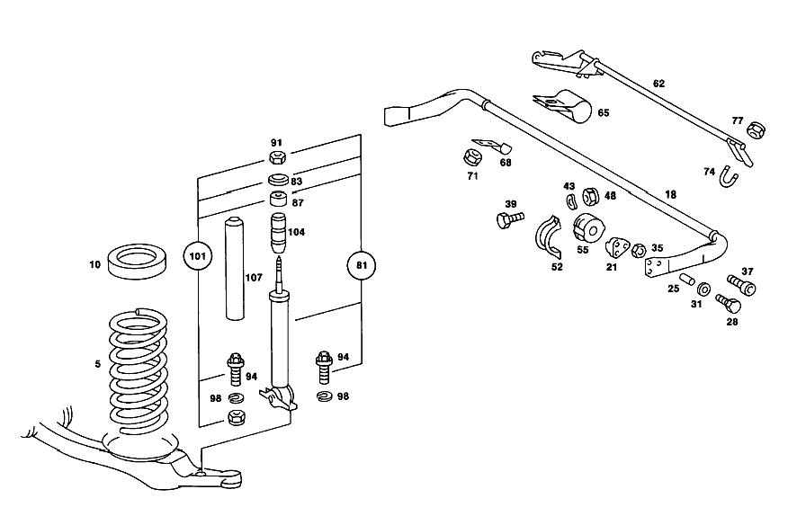

| № | Артикул | Название | Кол. | Примечание | Ограничение |
|---|---|---|---|---|---|
| 18 | A 116 323 52 65 | Торсион | 1 | СПЕРЕДИ | |
| 21 | A 116 333 03 43 | зажимной элемент | 1 | СЛЕВА | |
| 21 | A 116 333 04 43 | зажимной элемент | 1 | СПРАВА | |
| 25 | N 007346 008001 | Зажимная гильза | - | ||
| 25 | N 000000 000999 | Распорный штифт | 4 | ||
| 28 | N 000933 006123 | Винт | 4 | ||
| 31 | N 000125 006421 | Шайба | 8 | ||
| 35 | N 913002 006005 | Гайка | - | ||
| 35 | N 913002 006009 | Гайка | 4 | M6 | |
| 37 | N 000912 010086 | Винт | - | ||
| 37 | N 000912 010218 | Цилиндрич. винт | 2 | ||
| 48 | N 913002 008004 | Гайка | 4 | M8 [008] FROM CHASSIS 020 016248 024,025 018424 028,029 016829 032,033 016372 | |
| 52 | A 116 323 06 40 | Держатель | 2 | СТАБИЛИЗ. НА РАМЕ | |
| 55 | A 116 323 36 85 | САЙЛЕНТ-БЛОК | NB | СТАБИЛИЗ. НА РАМЕ | |
| 55 | A 116 323 35 85 | Резиновая опора | NB | СТАБИЛИЗ. НА РАМЕ | |
| 62 | A 116 320 03 27 | РЫЧАГ | 1 | ||
| 62 | A 116 320 05 27 | РЫЧАГ | 1 | ||
| 65 | A 116 327 00 84 | ВКЛАДКА | 1 | РЫЧАГ НА СТАБИЛИЗАТОРЕ | |
| 68 | A 116 995 03 20 | ХОМУТ | 1 | РЫЧАГ НА СТАБИЛИЗАТОРЕ | |
| 71 | N 913002 006005 | Гайка | - | ||
| 71 | N 913002 006009 | Гайка | 2 | РЫЧАГ НА СТАБИЛИЗАТОРЕ; M6 | |
| 74 | A 116 327 01 28 | СКОБА | 1 | РЫЧАГ НА СТАБИЛИЗАТОРЕ | |
| 77 | N 913002 005005 | Гайка | 2 | РЫЧАГ НА СТАБИЛИЗАТОРЕ | |
| 141 | A 116 320 25 11 | СТАБИЛИЗ. ПОПЕР. УСТОЙЧ. | 1 | СЗАДИ | |
| 148 | A 116 320 04 37 | - Язычок | 2 | ||
| 151 | N 007346 011005 | - Зажимная гильза | 4 | ||
| 158 | N 000933 008153 | - Винт | - | M8X25\-8.8 | |
| 158 | N 304017 008034 | - Винт с 6-гранной головкой | 4 | M8X25 | |
| 164 | N 000125 008418 | - Шайба | - | ||
| 164 | N 000125 008443 | - Шайба | 8 | 8 MM | |
| 171 | N 913002 008004 | - Гайка | 4 | M8 | |
| 175 | A 107 990 01 19 | болт | 2 | СТАБИЛИЗАТОР НА СТУПИЦЕ КОЛЕСА | |
| 179 | A 116 326 03 76 | Диск | 2 | СТАБИЛИЗАТОР НА СТУПИЦЕ КОЛЕСА | |
| 183 | A 107 326 02 26 | Скоба | 2 | СВЕРХУ | |
| 186 | A 107 326 04 26 | Скоба | 2 | ВНИЗУ | |
| 201 | A 116 326 13 81 | Резиновая опора | 2 | СТАБИЛИЗ. НА РАМЕ | |
| 203 | N 912004 012100 | Пружинное кольцо | 4 | СТАБИЛИЗ. НА РАМЕ | |
| 204 | A 094 990 66 09 | Винт с 6-гранной головкой | 4 | СТАБИЛИЗ. НА РАМЕ | |
| 249 | A 115 320 03 44 | Резиновый буфер | 2 | ||
| 253 | N 912004 008102 | Пружинное кольцо | 2 | БУФЕР НА РАМЕ | |
| 257 | N 000912 008009 | Винт | - | M8X20\-8.8 | |
| 257 | N 000912 008200 | Цилиндрич. винт | - | M 8X20\-8.8 | |
| 257 | N 000912 008219 | Цилиндрич. винт | 2 | БУФЕР НА РАМЕ; M8X20 | |
| 262 | A 116 320 25 13 | АМОРТИЗАЦИОННАЯ СТОЙКА | 1 | СПЕРЕДИ СЛЕВА | |
| 262 | A 116 320 38 13 | АМОРТИЗАЦИОННАЯ СТОЙКА | 1 | для SPORTY DRIVING VORN LINKS / FRONT LEFT | |
| 262 | A 116 320 26 13 | Амортизационная стойка | 1 | СПЕРЕДИ СПРАВА | |
| 262 | A 116 320 39 13 | АМОРТИЗАЦИОННАЯ СТОЙКА | 1 | для SPORTY DRIVING VORN RECHTS / FRONT RIGHT | |
| 265 | A 116 320 10 28 | - Шаровой шарнир | 2 | ||
| 265 | A 116 320 09 28 | - ШАРНИР ШАРОВОЙ | 2 | ||
| 268 | A 116 327 18 81 | - Резиновая опора | 2 | АМОРТ. СТОЙКА НА РАМЕ | |
| 272 | A 116 327 12 81 | - Упор | 2 | (REBOUND STOP) | |
| 276 | N 007349 010003 | - Шайба | - | ||
| 276 | N 007349 010007 | - Шайба | 2 | АМОРТ. СТОЙКА НА РАМЕ | |
| 280 | N 000933 010145 | - Винт | 2 | АМОРТ. СТОЙКА НА РАМЕ | |
| 284 | N 000137 010201 | - Пружинная шайба | - | АМОРТ. СТОЙКА НА РАМЕ | |
| 289 | N 000933 006103 | Винт | - | ||
| 289 | N 304017 006018 | Винт с 6-гранной головкой | 8 | АМОРТ. СТОЙКА НА РАМЕ; M6X12 | |
| 294 | N 000137 006204 | Пружинная шайба | 8 | АМОРТ. СТОЙКА НА РАМЕ | |
| 298 | N 000934 006013 | Гайка | - | ||
| 298 | N 304032 006008 | Шестигранная гайка | 8 | АМОРТ. СТОЙКА НА РАМЕ | |
| 303 | N 000933 008131 | Винт | - | ||
| 303 | N 304017 008016 | Винт с 6-гранной головкой | 2 | M8X16 | |
| 307 | A 123 990 08 91 | гайка | 2 | ||
| 311 | N 000933 008148 | Винт | - | ||
| 311 | N 304017 008023 | Винт с 6-гранной головкой | 4 | АМОРТ. СТОЙКА НА ПЕРЕДНЕМ МОСТУ; M8X20\-10.9 | |
| 316 | N 000137 008204 | Пружинная шайба | - | ||
| 316 | N 000137 008212 | Пружинная шайба | 4 | АМОРТ. СТОЙКА НА ПЕРЕДНЕМ МОСТУ | |
| 320 | A 116 320 36 13 | АМОРТИЗАЦИОННАЯ СТОЙКА | 2 | СЗАДИ | |
| 320 | A 116 320 37 13 | АМОРТИЗАЦИОННАЯ СТОЙКА | 2 | для SPORTY DRIVING HINTEN / REAR | |
| 324 | A 116 328 02 92 | - Манжета | 2 | ||
| 327 | A 116 328 00 08 | - Стяжное кольцо | 2 | СВЕРХУ | |
| 331 | A 116 328 01 08 | - КОЛЬЦО | 2 | ВНИЗУ | |
| 335 | A 116 320 08 28 | - ШАРНИР ШАРОВОЙ | 2 | [402] БОЛЬШЕ НЕ ПОСТАВЛЯЕТСЯ | |
| 335 | A 116 320 11 28 | - ШАРНИР ШАРОВОЙ | 2 | ||
| 339 | A 116 327 14 81 | - Эластомерная опора | 2 | АМОРТ. СТОЙКА НА РАМЕ | |
| 342 | A 116 328 07 74 | - БОЛТ | 2 | АМОРТ. СТОЙКА НА РАМЕ | |
| 345 | A 116 327 15 81 | Эластомерная опора | 2 | АМОРТ. СТОЙКА НА РАМЕ | |
| 349 | N 000137 008204 | Пружинная шайба | - | ||
| 349 | N 000137 008212 | Пружинная шайба | 2 | АМОРТ. СТОЙКА НА РАМЕ | |
| 353 | N 000934 008013 | Гайка | 2 | АМОРТ. СТОЙКА НА РАМЕ | |
| 357 | N 000933 010128 | Винт | 4 | АМОРТ. СТОЙКА НА ЗАДН. МОСТУ | |
| 358 | N 000137 010201 | Пружинная шайба | 4 | АМОРТ. СТОЙКА НА ЗАДН. МОСТУ | |
| 360 | N 000125 010518 | Шайба | - | ||
| 360 | N 000125 010532 | Шайба | 4 | АМОРТ. СТОЙКА НА ЗАДН. МОСТУ | |
| 364 | A 116 320 03 58 | КЛАПАН | - | ||
| 364 | A 126 320 06 58 | Клапан | 2 | РЕГУЛЯТОР ВЫСОТЫ [409] ПРИ МОНТАЖЕ ПОДОГНАТЬ ПО МЕСТУ | |
| 365 | A 116 328 05 40 | ДЕРЖАТЕЛЬ | 1 | FRONT HEIGHT CONTROL VALVE Рулевое управление: ВлевоАвтоматическая коробка переключения передач | |
| 365 | A 116 328 10 40 | ДЕРЖАТЕЛЬ | 1 | FRONT HEIGHT CONTROL VALVE Рулевое управление: ВправоАвтоматическая коробка переключения передач | |
| 367 | N 000137 006204 | Пружинная шайба | 2 | ДЕРЖАТЕЛЬ НА РАМЕ | |
| 371 | N 000933 006103 | Винт | - | ||
| 371 | N 304017 006018 | Винт с 6-гранной головкой | 2 | ДЕРЖАТЕЛЬ НА РАМЕ; M6X12 | |
| 374 | N 007976 006203 | Шуруп | 3 | РЕГУЛЯТОР ВЫСОТЫ НА ДЕРЖАТЕЛЕ; B6,3X13 | |
| 377 | A 123 320 14 89 | Тяга | 1 | ||
| 381 | A 123 328 00 63 | - Угловой шарнир | 1 | ПРАВАЯ РЕЗЬБА | |
| 382 | N 000934 006007 | - Гайка | 1 | ПРАВАЯ РЕЗЬБА | |
| 384 | A 123 328 01 63 | - Угловой шарнир | 1 | ЛЕВАЯ РЕЗЬБА | |
| 388 | N 000934 006012 | - Гайка | 1 | ЛЕВАЯ РЕЗЬБА [402] БОЛЬШЕ НЕ ПОСТАВЛЯЕТСЯ | |
| 391 | N 000934 006013 | Гайка | - | ||
| 391 | N 304032 006008 | Шестигранная гайка | 2 | ||
| 394 | N 000137 006204 | Пружинная шайба | 2 | ||
| 398 | A 116 328 04 40 | ДЕРЖАТЕЛЬ | 1 | REAR HEIGHT CONTROL VALVE | |
| 401 | N 000137 006204 | Пружинная шайба | 2 | ДЕРЖАТЕЛЬ НА РАМЕ | |
| 405 | N 000933 006103 | Винт | - | ||
| 405 | N 304017 006018 | Винт с 6-гранной головкой | 2 | ДЕРЖАТЕЛЬ НА РАМЕ; M6X12 | |
| 409 | N 007976 006203 | Шуруп | 4 | РЕГУЛЯТОР ВЫСОТЫ НА ДЕРЖАТЕЛЕ; B6,3X13 | |
| 412 | A 116 326 03 69 | РЫЧАГ | 1 | ||
| 416 | A 116 328 00 26 | Скоба | 1 | РЫЧАГ НА СТАБИЛИЗАТОРЕ | |
| 419 | N 000934 005008 | Гайка | 2 | РЫЧАГ НА СТАБИЛИЗАТОРЕ; M5 | |
| 423 | N 000137 005203 | Пружинная шайба | 2 | РЫЧАГ НА СТАБИЛИЗАТОРЕ | |
| 427 | A 123 320 14 89 | Тяга | 1 | ||
| 428 | A 123 328 00 63 | - Угловой шарнир | 1 | ПРАВАЯ РЕЗЬБА | |
| 429 | N 000934 006007 | - Гайка | 1 | ПРАВАЯ РЕЗЬБА | |
| 430 | A 123 328 01 63 | - Угловой шарнир | 1 | ЛЕВАЯ РЕЗЬБА | |
| 434 | N 000934 006012 | - Гайка | 1 | ЛЕВАЯ РЕЗЬБА [402] БОЛЬШЕ НЕ ПОСТАВЛЯЕТСЯ [027] EXHAUST STOCK OF OLD PARTS NUMBER FIRST UP TO CHASSIS:036 005484 | |
| 437 | N 000934 006013 | Гайка | - | ||
| 437 | N 304032 006008 | Шестигранная гайка | 2 | ТЯГА К СТАБИЛИЗАТОРУ ПОПЕРЕЧНОЙ УСТОЙЧИВОСТИ | |
| 441 | N 000137 006204 | Пружинная шайба | 2 | ТЯГА К СТАБИЛИЗАТОРУ ПОПЕРЕЧНОЙ УСТОЙЧИВОСТИ | |
| 444 | A 126 320 07 15 | Пруж. энергоаккумулятор | 1 | LEFT,FRONT AXLE,RED | |
| 447 | N 007603 014106 | Уплотнительное кольцо | 1 | 14X20\-CU | |
| 451 | N 915013 008002 | Штуцер | 1 | ||
| 455 | N 000137 008204 | Пружинная шайба | - | ||
| 455 | N 000137 008212 | Пружинная шайба | 3 | РЕСИВЕР ПОДВЕСКИ НА РАМЕ | |
| 459 | N 000934 008013 | Гайка | 3 | РЕСИВЕР ПОДВЕСКИ НА РАМЕ | |
| 463 | A 116 320 57 72 | Провод | 1 | FROM SPRING LOAD ACCUMULATOR TO HYDROPNEUMATIC SPRING LEG | |
| 466 | A 126 997 40 82 | Шланг | 1 | FROM SPRING LOAD ACCUMULATOR TO HYDROPNEUMATIC SPRING LEG | |
| 470 | N 007603 014106 | Уплотнительное кольцо | 1 | 14X20\-CU | |
| 474 | A 126 320 07 15 | Пруж. энергоаккумулятор | 1 | FRONT AXLE RIGHT RED | |
| 477 | A 116 320 04 43 | ДЕРЖАТЕЛЬ | 1 | РЕСИВЕР ПОДВЕСКИ НА РАМЕ | |
| 481 | N 000137 008204 | Пружинная шайба | - | ||
| 481 | N 000137 008212 | Пружинная шайба | 2 | РЕСИВЕР ПОДВЕСКИ НА РАМЕ | |
| 485 | N 000934 008013 | Гайка | 2 | РЕСИВЕР ПОДВЕСКИ НА РАМЕ | |
| 489 | N 000933 008130 | Винт | - | ||
| 489 | N 304017 008039 | Винт с 6-гранной головкой | 2 | РЕСИВЕР ПОДВЕСКИ НА РАМЕ | |
| 492 | N 000137 008204 | Пружинная шайба | - | ||
| 492 | N 000137 008212 | Пружинная шайба | 3 | РЕСИВЕР ПОДВЕСКИ НА РАМЕ | |
| 496 | N 000934 008013 | Гайка | 1 | РЕСИВЕР ПОДВЕСКИ НА РАМЕ | |
| 500 | N 007603 014106 | Уплотнительное кольцо | 1 | 14X20\-CU | |
| 503 | N 915013 008002 | Штуцер | 1 | ||
| 507 | A 116 320 56 72 | Гидравлич. трубопровод | 1 | FROM SPRING LOAD ACCUMULATOR TO HYDROPNEUMATIC SPRING LEG | |
| 510 | A 126 997 40 82 | Шланг | 1 | FROM SPRING LOAD ACCUMULATOR TO HYDROPNEUMATIC SPRING LEG | |
| 513 | N 007603 014106 | Уплотнительное кольцо | 1 | 14X20\-CU | |
| 515 | A 114 997 02 90 | связующее вещество | - | ||
| 515 | A 114 997 05 90 | связующее вещество | 1 | 9X210 MM | |
| 518 | A 126 320 05 15 | ВОЗДУШ. КАМЕРА | - | ||
| 518 | A 126 320 13 15 | Пруж. энергоаккумулятор | 2 | REAR AXLE;BLUE | |
| 521 | A 126 320 02 43 | Держатель | 2 | РЕСИВЕР ПОДВЕСКИ НА РАМЕ | |
| 524 | N 000137 008204 | Пружинная шайба | - | ||
| 524 | N 000137 008212 | Пружинная шайба | 6 | РЕСИВЕР ПОДВЕСКИ НА РАМЕ | |
| 528 | N 000934 008013 | Гайка | 6 | РЕСИВЕР ПОДВЕСКИ НА РАМЕ | |
| 532 | N 007603 014106 | Уплотнительное кольцо | 4 | 14X20\-CU | |
| 535 | N 915036 010204 | Полый болт | - | ||
| 535 | N 915036 010108 | Полый болт | 2 | ||
| 539 | A 126 997 40 82 | Шланг | 2 | FROM SPRING LOAD ACCUMULATOR TO HYDROPNEUMATIC SPRING LEG | |
| 542 | N 007603 014106 | Уплотнительное кольцо | 2 | 14X20\-CU | |
| 545 | N 915009 008002 | Штуцер | 2 | ||
| 548 | A 126 320 07 15 | Пруж. энергоаккумулятор | 1 | CENTRAL,RED | |
| 552 | N 000137 008204 | Пружинная шайба | - | ||
| 552 | N 000137 008212 | Пружинная шайба | 3 | РЕСИВЕР ПОДВЕСКИ НА РАМЕ | |
| 556 | N 000934 008013 | Гайка | 3 | РЕСИВЕР ПОДВЕСКИ НА РАМЕ | |
| 559 | A 001 545 23 11 | Переключатель | 1 | CENTRAL ACCUMULATOR PRESSURE SWITCH | |
| 562 | A 116 327 03 65 | ШТУЦЕР | 1 | ||
| 566 | N 007603 014106 | Уплотнительное кольцо | 2 | 14X20\-CU | |
| 569 | A 116 320 02 14 | БАЧОК | 1 | (МАСЛ. ПИТАЮЩ. БАЧОК) | |
| 573 | A 000 328 02 21 | КРЫШКА | 1 | ЩУП МАСЛЯНЫЙ SEE FIG.NOS.: 649 | |
| 579 | A 116 584 59 21 | ТАБЛИЧКА С УКАЗАНИЯМИ | 1 | ||
| 581 | A 126 320 01 58 | КЛАПАН | 1 | (БЛОК КЛАПАНОВ) [409] ПРИ МОНТАЖЕ ПОДОГНАТЬ ПО МЕСТУ | |
| 584 | A 116 320 05 58 | - КЛАПАН | - | ||
| 584 | A 126 320 00 58 | - КЛАПАН | 1 | РЕГУЛЯТОР ДАВЛЕНИЯ [417] БОЛЬШЕ НЕ ПОСТАВЛЯЕТСЯ, ЗАКАЗЫВАТЬ КОМПЛЕКТ ПОСТАВКИ [409] ПРИ МОНТАЖЕ ПОДОГНАТЬ ПО МЕСТУ | |
| 588 | A 116 327 00 91 | - Фильтр | 1 | ||
| 591 | A 002 184 55 01 | - Масляный фильтр | 1 | ||
| 594 | A 006 997 76 45 | - Уплотнительное кольцо | 1 | ||
| 598 | A 116 327 00 71 | - БОЛТ | 1 | ||
| 601 | A 116 993 05 10 | - пружина | 1 | TO 116 320 05 58 | |
| 605 | A 116 997 00 19 | - РЕЗЬБОВОЙ ШТИФТ | 1 | TO 116 320 05 58 [402] БОЛЬШЕ НЕ ПОСТАВЛЯЕТСЯ | |
| 609 | N 000934 006013 | - Гайка | - | ||
| 609 | N 304032 006008 | - Шестигранная гайка | 2 | TO 116 320 05 58 | |
| 613 | A 094 990 68 10 | - Пружинное кольцо | 1 | TO 116 320 05 58 | |
| 617 | A 094 990 48 05 | - Шайба | 1 | TO 116 320 05 58 | |
| 621 | A 116 320 04 58 | - КЛАПАН | 1 | ADJUSTMENT SWITCH | |
| 624 | A 000 997 02 48 | - Кольцевая прокладка | 2 | ||
| 628 | A 116 320 03 43 | - ДЕРЖАТЕЛЬ | 1 | ПРОВОЛОЧНЫЙ ТРОС | |
| 631 | N 000931 006115 | - Винт | - | ||
| 631 | N 000933 006151 | - Винт | 2 | ADJUSTMENT SWITCH TO PRESSURE REGULATOR | |
| 634 | A 094 990 68 10 | - Пружинное кольцо | 2 | ADJUSTMENT SWITCH TO PRESSURE REGULATOR | |
| 637 | A 116 995 04 20 | ХОМУТ | 1 | WIRE CABLE TO VALVE UNIT BRACKET [402] БОЛЬШЕ НЕ ПОСТАВЛЯЕТСЯ | |
| 640 | A 116 997 05 81 | КАБ. ВТУЛКА | 1 | WIRE CABLE TO VALVE UNIT BRACKET | |
| 643 | N 000137 006204 | Пружинная шайба | 2 | WIRE CABLE TO VALVE UNIT BRACKET | |
| 646 | N 000934 006013 | Гайка | - | ||
| 646 | N 304032 006008 | Шестигранная гайка | 2 | WIRE CABLE TO VALVE UNIT BRACKET | |
| 647 | N 000934 005008 | Гайка | 2 | VALVE UNIT TO OIL RESERVOIR; M5 | |
| 648 | N 000137 005203 | Пружинная шайба | 2 | VALVE UNIT TO OIL RESERVOIR | |
| 649 | A 002 997 97 48 | Уплотнительное кольцо | 1 | VALVE UNIT TO OIL RESERVOIR | |
| 650 | A 126 327 00 76 | Диск | 1 | VALVE UNIT TO OIL RESERVOIR | |
| 651 | A 116 327 05 40 | ДЕРЖАТЕЛЬ | 1 | МАСЛЯНЫЙ БАЧОК НА ПАНЕЛИ КОЛЕСНОЙ АРКИ | |
| 653 | N 007976 006203 | Шуруп | 3 | ДЕРЖАТЕЛЬ НА РАМЕ; B6,3X13 | |
| 656 | A 116 988 09 11 | Резиновый буфер | 3 | МАСЛ.ПИТАЮЩ.БАЧОК НА КОНСОЛИ | |
| 659 | N 000137 006204 | Пружинная шайба | 6 | МАСЛ.ПИТАЮЩ.БАЧОК НА КОНСОЛИ | |
| 662 | N 000934 006013 | Гайка | - | ||
| 662 | N 304032 006008 | Шестигранная гайка | 3 | МАСЛ.ПИТАЮЩ.БАЧОК НА КОНСОЛИ | |
| 665 | N 000125 006421 | Шайба | 4 | МАСЛ.ПИТАЮЩ.БАЧОК НА КОНСОЛИ | |
| 668 | N 000933 006122 | Винт | - | ||
| 668 | N 304017 006034 | Винт с 6-гранной головкой | 3 | МАСЛ.ПИТАЮЩ.БАЧОК НА КОНСОЛИ | |
| 671 | A 116 320 01 91 | ПРОВОЛОЧНЫЙ ТРОС | 1 | Рулевое управление: ВлевоАвтоматическая коробка переключения передач | |
| 671 | A 116 320 02 91 | ПРОВОЛОЧНЫЙ ТРОС | 1 | Рулевое управление: ВправоАвтоматическая коробка переключения передач | |
| 674 | A 000 327 01 78 | РЕЗЬБОВАЯ ДЕТАЛЬ | 1 | ТРОСОВАЯ ТЯГА К ПЕРЕДНЕЙ ПАНЕЛИ [402] БОЛЬШЕ НЕ ПОСТАВЛЯЕТСЯ | |
| 677 | A 116 990 00 51 | гайка | 1 | ТРОСОВАЯ ТЯГА К ПЕРЕДНЕЙ ПАНЕЛИ | |
| 680 | A 116 320 01 97 | КНОПКА | - | ||
| 680 | A 126 320 00 97 | Кнопка | 1 | ||
| 683 | A 116 329 01 93 | КОЛПАЧОК | 1 | WIRE CABLE TO VALVE UNIT LEVER [402] БОЛЬШЕ НЕ ПОСТАВЛЯЕТСЯ | |
| 684 | A 002 988 49 78 | Скоба | 1 | WIRE CABLE TO BRAKE BOOSTER | |
| 686 | A 116 997 96 82 | Шланг | 1 | FROM PUMP TO OIL RESERVOIR | |
| 689 | N 040621 016200 | - Изоляционный шланг | 1 | [404] ЗАКАЗЫВАТЬ ПОГОННЫМИ МЕТРАМИ | |
| 690 | N 916026 016001 | - Хомут | - | 16\-24MM | |
| 690 | A 005 997 01 90 | - Хомут для шланга | 1 | 14\-24 MM | |
| 692 | N 915006 006003 | ШТУЦЕР ДВОЙНОЙ | 1 | ||
| 695 | N 007603 014106 | Уплотнительное кольцо | 1 | 14X20\-CU | |
| 698 | A 116 320 89 72 | Гидравлич. трубопровод | 1 | МАСЛ. БАЧОК К МАСЛ. НАСОСУ Автоматическая коробка переключения передач | |
| 701 | A 116 320 10 53 | ПРОВОД | 1 | (ТРУБОПРОВОД ОЖ) Рулевое управление: ВлевоАвтоматическая коробка переключения передач | |
| 701 | A 116 320 11 53 | ПРОВОД | 1 | (ТРУБОПРОВОД ОЖ) Рулевое управление: ВправоАвтоматическая коробка переключения передач | |
| 704 | A 114 997 04 82 | Шланг | 1 | FROM OIL RESERVOIR TO COOLING LINE 180 MM [404] ЗАКАЗЫВАТЬ ПОГОННЫМИ МЕТРАМИ | |
| 704 | A 114 997 04 82 | Шланг | 1 | FROM COOLING LINE TO OIL PUMP PIPE 300 MM [404] ЗАКАЗЫВАТЬ ПОГОННЫМИ МЕТРАМИ | |
| 707 | A 107 997 14 82 | ШЛАНГ | 1 | (ЗАЩИТНЫЙ ШЛАНГ) 240 MM [402] БОЛЬШЕ НЕ ПОСТАВЛЯЕТСЯ [404] ЗАКАЗЫВАТЬ ПОГОННЫМИ МЕТРАМИ | |
| 708 | N 916026 010000 | Хомут | - | ||
| 708 | A 000 995 35 07 | Хомут | 4 | 12\-22 MM | |
| 710 | A 123 420 62 28 | Провод | 1 | FROM RESERVOIR PRESSURE SWITCH TO CENTRAL ACCUMULATOR [409] ПРИ МОНТАЖЕ ПОДОГНАТЬ ПО МЕСТУ | |
| 713 | A 123 420 93 28 | Провод | 1 | FROM ADJUSTMENT SWITCH TO CENTRAL ACCUMULATOR [409] ПРИ МОНТАЖЕ ПОДОГНАТЬ ПО МЕСТУ | |
| 716 | A 123 420 73 28 | Провод | 1 | FROM OIL RESERVOIR TO COUPLING PIECE Рулевое управление: ВлевоАвтоматическая коробка переключения передач [409] ПРИ МОНТАЖЕ ПОДОГНАТЬ ПО МЕСТУ | |
| 719 | A 121 429 01 34 | 6-гр. распорный элемент | 3 | M10 Рулевое управление: ВлевоАвтоматическая коробка переключения передач | |
| 721 | A 116 320 95 72 | ПРОВОД | 1 | FROM OIL RESERVOIR TO DISTRIBUTOR Рулевое управление: ВлевоАвтоматическая коробка переключения передач | |
| 723 | A 123 420 91 28 | Провод | 1 | FROM FRONT HEIGHT CONTROL VALVE TO DISTRIBUTOR; 4.75X0.7X130 MM Рулевое управление: ВлевоАвтоматическая коробка переключения передач [409] ПРИ МОНТАЖЕ ПОДОГНАТЬ ПО МЕСТУ | |
| 726 | A 116 990 02 72 | Распределитель | 1 | Рулевое управление: ВлевоАвтоматическая коробка переключения передач | |
| 729 | A 123 420 89 28 | Провод | 1 | РЕГУЛ. ВЫСОТЫ СЗАДИ К РАСПРЕДЕЛИТ.; 4.75 X 0.7 X 4000 MM Рулевое управление: ВлевоАвтоматическая коробка переключения передач [409] ПРИ МОНТАЖЕ ПОДОГНАТЬ ПО МЕСТУ | |
| 731 | A 123 420 92 28 | Провод | 1 | FROM OIL RESERVOIR TO DISTRIBUTOR | |
| 731E | A 123 420 95 28 | Провод | 1 | FROM OIL RESERVOIR TO DISTRIBUTOR; 4.75X0.7X950MM Рулевое управление: ВправоАвтоматическая коробка переключения передач [409] ПРИ МОНТАЖЕ ПОДОГНАТЬ ПО МЕСТУ | |
| 732 | A 123 420 91 28 | Провод | 1 | FROM DISTRIBUTOR TO HEIGHT CONTROL VALVE IN ENGINE COMPARTMENT; 4.75X0.7X130 MM Рулевое управление: ВправоАвтоматическая коробка переключения передач [409] ПРИ МОНТАЖЕ ПОДОГНАТЬ ПО МЕСТУ | |
| 733 | A 123 420 66 28 | Провод | 1 | FROM DISTRIBUTOR TO COUPLING IN THE RIGHT OF ENGINE COMPARTMENT Рулевое управление: ВправоАвтоматическая коробка переключения передач [409] ПРИ МОНТАЖЕ ПОДОГНАТЬ ПО МЕСТУ | |
| 733F | A 121 429 01 34 | 6-гр. распорный элемент | 1 | M10 | |
| 734 | A 123 420 90 28 | Провод | 1 | FROM COUPLING PIECE TO LEFT SELFLEVELLING UNIT; 4.75X0.7X4290 MM Рулевое управление: ВправоАвтоматическая коробка переключения передач [409] ПРИ МОНТАЖЕ ПОДОГНАТЬ ПО МЕСТУ | |
| 735 | A 116 320 16 72 | Провод | 2 | ||
| 738 | A 116 990 02 72 | Распределитель | 1 | Рулевое управление: ВлевоАвтоматическая коробка переключения передач | |
| 739 | A 116 990 03 72 | РАСПРЕДЕЛИТЕЛЬ | 1 | Рулевое управление: ВправоАвтоматическая коробка переключения передач | |
| 740 | A 123 420 93 28 | Провод | 1 | FROM DISTRIBUTOR TO COUPLING [409] ПРИ МОНТАЖЕ ПОДОГНАТЬ ПО МЕСТУ | |
| 743 | A 121 429 01 34 | 6-гр. распорный элемент | 1 | M10 | |
| 746 | A 123 420 98 28 | Тормозная трубка | 1 | РАСПРЕДЕЛИТ.К РАСПРЕДЕЛ.; 4.75 X 0.7 X 1850 MM Рулевое управление: ВлевоАвтоматическая коробка переключения передач [409] ПРИ МОНТАЖЕ ПОДОГНАТЬ ПО МЕСТУ | |
| 747 | A 116 990 03 72 | РАСПРЕДЕЛИТЕЛЬ | 1 | Рулевое управление: ВлевоАвтоматическая коробка переключения передач | |
| 748 | A 000 420 08 55 | Клапан выпуска воздуха | 1 | СЛИВ МАСЛА Рулевое управление: ВлевоКоробка передач | |
| 749 | A 123 420 67 28 | Провод | 1 | FROM DISTRIBUTOR TO COUPLING IN THE RIGHT OF ENGINE COMPARTMENT Рулевое управление: ВлевоАвтоматическая коробка переключения передач [409] ПРИ МОНТАЖЕ ПОДОГНАТЬ ПО МЕСТУ | |
| 751 | A 116 320 98 72 | ПРОВОД | - | Рулевое управление: ВлевоАвтоматическая коробка переключения передач | |
| 751 | A 123 420 96 28 | Тормозная трубка | 1 | FROM DISTRIBUTOR TO COUPLING Рулевое управление: ВлевоАвтоматическая коробка переключения передач [409] ПРИ МОНТАЖЕ ПОДОГНАТЬ ПО МЕСТУ | |
| 752 | A 116 990 02 72 | Распределитель | 1 | Рулевое управление: ВлевоАвтоматическая коробка переключения передач | |
| 756 | A 123 420 84 28 | Провод | 1 | FROM COUPLING PIECE TO DISTRIBUTOR AT CROSS MEMBER; 4.75X0.7X3390 MM Рулевое управление: ВлевоАвтоматическая коробка переключения передач [409] ПРИ МОНТАЖЕ ПОДОГНАТЬ ПО МЕСТУ | |
| 759 | A 116 990 03 72 | РАСПРЕДЕЛИТЕЛЬ | 1 | FROM DISTRIBUTOR TO COUPLING | |
| 761 | A 123 420 65 28 | Провод | 1 | FROM DISTRIBUTOR TO COUPLING [409] ПРИ МОНТАЖЕ ПОДОГНАТЬ ПО МЕСТУ | |
| 763 | A 116 320 88 72 | Провод | 2 | FROM HYDROPNEUMATIC SPRING LEG TO DISTRIBUTOR | |
| 766 | A 123 420 65 28 | Провод | 1 | FROM DISTRIBUTOR TO REAR HEIGHT CONTROL VALVE [409] ПРИ МОНТАЖЕ ПОДОГНАТЬ ПО МЕСТУ | |
| 767 | A 123 420 66 28 | Провод | 1 | FROM LEFT DISTRIBUTOR TO RIGHT COUPLING Рулевое управление: ВправоАвтоматическая коробка переключения передач [409] ПРИ МОНТАЖЕ ПОДОГНАТЬ ПО МЕСТУ | |
| 767B | A 121 429 01 34 | 6-гр. распорный элемент | 4 | M10 Рулевое управление: ВправоАвтоматическая коробка переключения передач | |
| 767E | A 123 420 56 28 | Провод | 1 | FROM COUPLING PIECE TO COUPLING PIECE AT RIGHT WHEELHOUSE Рулевое управление: ВправоАвтоматическая коробка переключения передач [409] ПРИ МОНТАЖЕ ПОДОГНАТЬ ПО МЕСТУ | |
| 768 | A 123 420 95 28 | Провод | 1 | QUADRUPLE DISTRIBUTOR TO TRIPLE DISTRIBUTOR AT LEFT WHEELHOUSE; 4.75X0.7X950MM Рулевое управление: ВправоАвтоматическая коробка переключения передач [409] ПРИ МОНТАЖЕ ПОДОГНАТЬ ПО МЕСТУ | |
| 768C | A 116 990 02 72 | Распределитель | 1 | Рулевое управление: ВправоАвтоматическая коробка переключения передач | |
| 768F | A 123 420 92 28 | Провод | 1 | TRIPLE DISTRIBUTOR TO SELF\-LEVELLING UNIT IN ENGINE COMPARTMENT Рулевое управление: ВправоАвтоматическая коробка переключения передач | |
| 769 | A 123 420 98 28 | Тормозная трубка | 1 | TRIPLE DISTRIBUTOR TO RIGHT COUPLING; 4.75 X 0.7 X 1850 MM Рулевое управление: ВправоАвтоматическая коробка переключения передач [409] ПРИ МОНТАЖЕ ПОДОГНАТЬ ПО МЕСТУ | |
| 769M | A 123 420 83 28 | Провод | 1 | FROM COUPLING PIECE TO DISTRIBUTOR AT CROSS MEMBER Рулевое управление: ВправоАвтоматическая коробка переключения передач [409] ПРИ МОНТАЖЕ ПОДОГНАТЬ ПО МЕСТУ | |
| 770 | A 116 320 06 53 | ПРОВОД | 1 | FROM DISTRIBUTOR TO LEFT FRONT SPRING LOAD ACCUMULATOR Рулевое управление: ВлевоАвтоматическая коробка переключения передач | |
| 772 | A 116 990 03 72 | РАСПРЕДЕЛИТЕЛЬ | 1 | Рулевое управление: ВлевоАвтоматическая коробка переключения передач | |
| 773 | A 000 420 08 55 | Клапан выпуска воздуха | 1 | СЛИВ МАСЛА Рулевое управление: ВлевоАвтоматическая коробка переключения передач | |
| 775 | A 123 420 91 28 | Провод | 1 | FROM DISTRIBUTOR TO RIGHT FRONT SPRING LOAD ACCUMULATOR; 4.75X0.7X130 MM Рулевое управление: ВлевоАвтоматическая коробка переключения передач [409] ПРИ МОНТАЖЕ ПОДОГНАТЬ ПО МЕСТУ | |
| 776 | A 116 320 07 53 | ПРОВОД | 1 | DISTRIBUTOR TO RIGHT FRONT HYDROPNEUMATIC ACCUMULATOR Рулевое управление: ВправоАвтоматическая коробка переключения передач [402] БОЛЬШЕ НЕ ПОСТАВЛЯЕТСЯ | |
| 778 | A 123 420 67 28 | Провод | 1 | FROM DISTRIBUTOR TO HEIGHT CONTROL VALVE IN ENGINE COMPARTMENT Рулевое управление: ВлевоАвтоматическая коробка переключения передач [409] ПРИ МОНТАЖЕ ПОДОГНАТЬ ПО МЕСТУ | |
| 779 | A 123 420 64 28 | Провод | 1 | FROM HEIGHT CONTROL VALVE IN ENGINE COMPARTMENT TO LEFT DISTRIBUTOR Рулевое управление: ВправоАвтоматическая коробка переключения передач [409] ПРИ МОНТАЖЕ ПОДОГНАТЬ ПО МЕСТУ | |
| 779E | A 116 990 03 72 | РАСПРЕДЕЛИТЕЛЬ | 1 | Рулевое управление: ВправоАвтоматическая коробка переключения передач | |
| 779K | A 000 420 08 55 | Клапан выпуска воздуха | 1 | СЛИВ МАСЛА Рулевое управление: ВправоАвтоматическая коробка переключения передач | |
| 780 | A 123 420 57 28 | Провод | 1 | FROM DISTRIBUTOR TO LEFT SPRING LOAD ACCUMULATOR Рулевое управление: ВправоАвтоматическая коробка переключения передач [409] ПРИ МОНТАЖЕ ПОДОГНАТЬ ПО МЕСТУ | |
| 781 | A 123 420 53 28 | Провод | 1 | РЕГУЛ. ВЫСОТЫ СЗАДИ К РАСПРЕДЕЛИТ.; 4.75X0.7X260 MM [409] ПРИ МОНТАЖЕ ПОДОГНАТЬ ПО МЕСТУ | |
| 784 | A 116 990 03 72 | РАСПРЕДЕЛИТЕЛЬ | 1 | ||
| 785 | A 000 420 08 55 | Клапан выпуска воздуха | 1 | СЛИВ МАСЛА | |
| 787 | A 116 320 86 72 | Провод | 1 | РАСПРЕДЕЛИТ. К РЕСИВЕРУ ПОДВЕСКИ СЗАДИ СЛЕВА | |
| 790 | A 116 320 87 72 | Провод | 1 | РАСПРЕДЕЛИТ. К РЕСИВЕРУ ПОДВЕСКИ СЗАДИ СПРАВА | |
| 793 | A 123 420 72 28 | Провод | 1 | FROM OIL RESERVOIR TO COUPLING PIECE Рулевое управление: ВлевоАвтоматическая коробка переключения передач [409] ПРИ МОНТАЖЕ ПОДОГНАТЬ ПО МЕСТУ | |
| 796 | A 123 420 66 28 | Провод | 1 | FROM COUPLING PIECE TO DISTRIBUTOR AT CROSS MEMBER Рулевое управление: ВлевоАвтоматическая коробка переключения передач [409] ПРИ МОНТАЖЕ ПОДОГНАТЬ ПО МЕСТУ | |
| 797 | A 123 420 65 28 | Провод | 1 | OIL RESERVOIR TO TRIPLE DISTRIBUTOR Рулевое управление: ВправоАвтоматическая коробка переключения передач [409] ПРИ МОНТАЖЕ ПОДОГНАТЬ ПО МЕСТУ | |
| 798 | A 116 990 02 72 | Распределитель | 1 | ||
| 799 | A 123 420 50 28 | Провод | 1 | FROM TRIPLE DISTRIBUTOR TO SELFLEVELLING UNIT IN ENGINE COMPARTMENT 180 MM; 4.75X0.7X180 MM Рулевое управление: ВлевоАвтоматическая коробка переключения передач [409] ПРИ МОНТАЖЕ ПОДОГНАТЬ ПО МЕСТУ | |
| 799 | A 123 420 50 28 | Провод | 1 | FROM TRIPLE DISTRIBUTOR TO SELFLEVELLING UNIT IN ENGINE COMPARTMENT 180 MM; 4.75X0.7X180 MM Рулевое управление: ВправоАвтоматическая коробка переключения передач [409] ПРИ МОНТАЖЕ ПОДОГНАТЬ ПО МЕСТУ | |
| 800 | A 123 420 97 28 | Провод | 1 | TRIPLE DISTRIBUTOR TO RIGHT COUPLING Рулевое управление: ВправоАвтоматическая коробка переключения передач [409] ПРИ МОНТАЖЕ ПОДОГНАТЬ ПО МЕСТУ | |
| 801 | A 123 420 88 28 | Провод | 1 | FROM RIGHT COUPLING PIECE TO REAR SELF\-LEVELLING UNIT; 4.75 X 0.7 X 3865 MM Рулевое управление: ВправоАвтоматическая коробка переключения передач [409] ПРИ МОНТАЖЕ ПОДОГНАТЬ ПО МЕСТУ | |
| 802 | A 123 420 90 28 | Провод | 1 | FROM TRIPLE DISTRIBUTOR TO REAR SELFLEVELLING UNIT; 4.75X0.7X4290 MM Рулевое управление: ВлевоАвтоматическая коробка переключения передач [409] ПРИ МОНТАЖЕ ПОДОГНАТЬ ПО МЕСТУ | |
| 805 | A 001 997 14 81 | резиновая втулка | 1 | ПАНЕЛЬ КОЛЕС.АРКИ СПРАВА | |
| 809 | A 111 997 23 81 | КАБ. ВТУЛКА | - | ||
| 809 | A 008 997 17 81 | втулка | 1 | ПАНЕЛЬ КОЛЕС.АРКИ СЛЕВА | |
| 811 | A 111 476 03 84 | Резиновое крепление | 2 | ЛОНЖЕРОН СЛЕВА И СПРАВА | |
| 812 | A 110 995 00 22 | хомут | 2 | ЛОНЖЕРОН СЛЕВА И СПРАВА | |
| 813 | N 007976 006203 | Шуруп | 2 | ЛОНЖЕРОН СЛЕВА И СПРАВА; B6,3X13 | |
| 815 | A 116 328 01 84 | ВКЛАДКА | 3 | К ПОПЕРЕЧИНЕ | |
| 818 | A 110 995 00 22 | хомут | 3 | К ПОПЕРЕЧИНЕ | |
| 821 | N 007976 006203 | Шуруп | 3 | К ПОПЕРЕЧИНЕ; B6,3X13 | |
| 822 | A 116 328 01 84 | ВКЛАДКА | 2 | НА ПАНЕЛИ КОЛЕСН.АРКИ Рулевое управление: ВлевоАвтоматическая коробка переключения передач | |
| 822 | A 116 328 01 84 | ВКЛАДКА | 3 | Рулевое управление: ВправоАвтоматическая коробка переключения передач | |
| 823 | A 110 995 00 22 | хомут | 4 | НА ПАНЕЛИ КОЛЕСН.АРКИ Рулевое управление: ВлевоАвтоматическая коробка переключения передач | |
| 824 | N 007976 006203 | Шуруп | 1 | НА ПАНЕЛИ КОЛЕСН.АРКИ; B6,3X13 Рулевое управление: ВлевоАвтоматическая коробка переключения передач | |
| 824E | N 000933 006103 | Винт | - | Рулевое управление: ВлевоАвтоматическая коробка переключения передач | |
| 824E | N 304017 006018 | Винт с 6-гранной головкой | 3 | НА ПАНЕЛИ КОЛЕСН.АРКИ; M6X12 Рулевое управление: ВлевоАвтоматическая коробка переключения передач | |
| 824H | A 094 990 68 10 | Пружинное кольцо | 3 | НА ПАНЕЛИ КОЛЕСН.АРКИ Рулевое управление: ВлевоАвтоматическая коробка переключения передач | |
| 824M | N 000934 006013 | Гайка | - | Рулевое управление: ВлевоАвтоматическая коробка переключения передач | |
| 824M | N 304032 006008 | Шестигранная гайка | 3 | НА ПАНЕЛИ КОЛЕСН.АРКИ Рулевое управление: ВлевоАвтоматическая коробка переключения передач | |
| 825 | A 001 997 42 90 | связующее вещество | - | Рулевое управление: ВправоАвтоматическая коробка переключения передач | |
| 825 | A 001 997 43 90 | Кабельная стяжка | 1 | 140mm; 9X250 MM Рулевое управление: ВправоАвтоматическая коробка переключения передач | |
| 825 | A 001 997 43 90 | Кабельная стяжка | 1 | 9X250 MM Рулевое управление: ВправоАвтоматическая коробка переключения передач | |
| 826 | A 116 328 05 84 | Резиновое крепление | 3 | НА ПЕРЕГОРОДКЕ Рулевое управление: ВправоАвтоматическая коробка переключения передач | |
| 830 | A 180 995 00 22 | хомут | 3 | НА ПЕРЕГОРОДКЕ Рулевое управление: ВправоАвтоматическая коробка переключения передач [402] БОЛЬШЕ НЕ ПОСТАВЛЯЕТСЯ | |
| 834 | N 007976 005203 | Шуруп | 2 | НА ПЕРЕГОРОДКЕ Рулевое управление: ВправоАвтоматическая коробка переключения передач | |
| 837 | A 116 428 00 85 | ДЕМПФ. ПОЛОСЫ | - | Рулевое управление: ВлевоАвтоматическая коробка переключения передач | |
| 837 | A 116 328 06 84 | Резиновое крепление | 1 | НА ЛОНЖЕРОНЕ СНИЗУ СПРАВА Рулевое управление: ВлевоАвтоматическая коробка переключения передач | |
| 837 | A 116 328 06 84 | Резиновое крепление | 2 | Рулевое управление: ВправоАвтоматическая коробка переключения передач | |
| 837 | A 116 328 06 84 | Резиновое крепление | 1 | ||
| 837 | A 116 328 06 84 | Резиновое крепление | 3 | ГЛАВН. ПОЛ СПРАВА | |
| 837 | A 116 328 06 84 | Резиновое крепление | 3 | REAR SEAT BENCH FLOOR,REAR SEAT BENCH BACKREST,AND TANK | |
| 839 | A 110 995 00 22 | хомут | 1 | НА ЛОНЖЕРОНЕ СНИЗУ СПРАВА Рулевое управление: ВлевоАвтоматическая коробка переключения передач | |
| 839 | A 110 995 00 22 | хомут | 2 | Рулевое управление: ВправоАвтоматическая коробка переключения передач | |
| 839 | A 110 995 00 22 | хомут | 3 | ГЛАВН. ПОЛ СПРАВА | |
| 839 | A 110 995 00 22 | хомут | 2 | REAR SEAT BENCH FLOOR,REAR SEAT BENCH BACKREST,AND TANK | |
| 840 | N 007976 006203 | Шуруп | 1 | НА ЛОНЖЕРОНЕ СНИЗУ СПРАВА; B6,3X13 Рулевое управление: ВлевоАвтоматическая коробка переключения передач | |
| 840 | N 007976 006203 | Шуруп | 2 | B6,3X13 Рулевое управление: ВправоАвтоматическая коробка переключения передач | |
| 840 | N 007976 006203 | Шуруп | 1 | ГЛАВН. ПОЛ СПРАВА; B6,3X13 | |
| 840 | N 007976 006203 | Шуруп | 2 | REAR SEAT BENCH FLOOR,REAR SEAT BENCH BACKREST,AND TANK; B6,3X13 | |
| 841 | A 201 428 00 40 | Держатель | 1 | НА СОЕДИНИТ.ЭЛЕМЕНТЕ ЛОНЖЕРОНА | |
| 842 | N 007976 006203 | Шуруп | 1 | НА СОЕДИНИТ.ЭЛЕМЕНТЕ ЛОНЖЕРОНА; B6,3X13 | |
| 844 | N 000933 006102 | Винт | - | ||
| 844 | N 304017 006016 | Винт с 6-гранной головкой | 1 | ГЛАВН. ПОЛ СПРАВА; M6X16 | |
| 845 | A 000 987 38 41 | КОЛЬЦО РЕЗИНОВОЕ | 1 | ГЛАВН. ПОЛ СПРАВА | |
| 847 | N 000934 006007 | Гайка | 1 | ГЛАВН. ПОЛ СПРАВА | |
| 849 | A 116 328 06 84 | Резиновое крепление | 1 | ||
| 850 | A 109 995 00 22 | хомут | 1 | ||
| 851 | N 007976 006203 | Шуруп | 1 | B6,3X13 | |
| 853 | A 126 328 01 81 | Резиновая опора | 1 | НА ТРАВЕРСЕ СЗАДИ | |
| 857 | A 108 995 05 20 | хомут | 1 | НА ТРАВЕРСЕ СЗАДИ | |
| 863 | N 007976 006203 | Шуруп | 1 | НА ТРАВЕРСЕ СЗАДИ; B6,3X13 | |
| A 116 327 02 65 | - ШТУЦЕР | - | [402] БОЛЬШЕ НЕ ПОСТАВЛЯЕТСЯ | ||
| A 116 990 02 72 | Распределитель | - | Рулевое управление: ВлевоАвтоматическая коробка переключения передач | ||
| A 121 429 01 34 | 6-гр. распорный элемент | 1 | M10 Рулевое управление: ВлевоАвтоматическая коробка переключения передач | ||
| A 116 320 27 72 | ПРОВОД | - | Рулевое управление: ВлевоАвтоматическая коробка переключения передач | ||
| A 116 990 02 72 | Распределитель | - | Рулевое управление: ВлевоАвтоматическая коробка переключения передач | ||
| A 116 990 02 72 | Распределитель | - | Рулевое управление: ВправоАвтоматическая коробка переключения передач | ||
| A 116 990 02 72 | Распределитель | - | |||
| A 126 327 00 30 | Резиновый буфер | 2 | СПЕРЕДИ | ||
| A 116 320 01 45 | Хомут | 2 | |||
| N 000125 008418 | Шайба | - | |||
| N 000125 008443 | Шайба | 4 | 8 MM | ||
| N 000934 008013 | Гайка | 4 | |||
| A 116 328 00 39 | РЕЗИНОВЫЙ УПОР | 1 | СЗАДИ СЛЕВА | ||
| A 116 328 01 39 | Буфер аварийного хода | 1 | СЗАДИ СПРАВА |
Позиций: 351 · подписано на схемах: 337 · колесо — плавный зум в курсор, перетаскивание — пан, двойной клик — зум, клик по артикулу — скопировать · наведите на строку или цифру на схеме — подсветка связки, клик — закрепить.